适老化住宅室内改造设计 · DO NOT FORGET ME
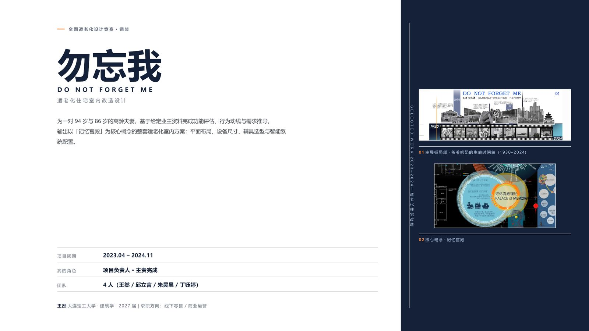
为一对 94 岁与 86 岁的高龄夫妻，基于给定业主资料完成功能评估、行为动线与需求推导，输出以「记忆宫殿」为核心概念的整套适老化室内方案：平面布局、设备尺寸、辅具选型与智能系统配置。
王然 大连理工大学 · 建筑学 · 2027 届 | 求职方向：线下零售 / 商业运营
一份竞赛档案：从业主资料到可核验的空间动作
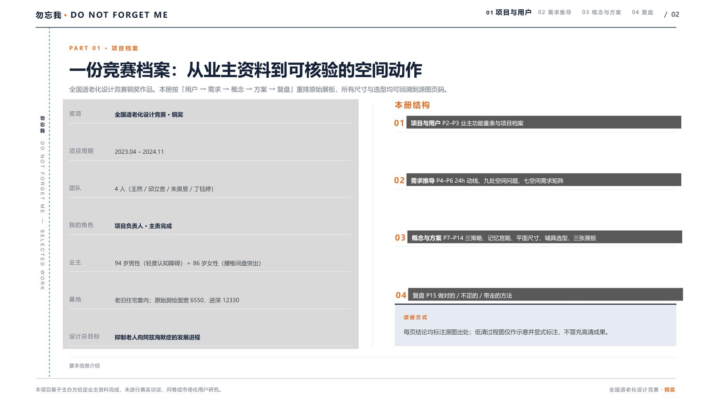
全国适老化设计竞赛铜奖作品。本册按「用户 → 需求 → 概念 → 方案 → 复盘」重排原始展板，所有尺寸与选型均可回溯到源图页码。
基本信息
本册结构
读册方式
每页结论均标注源图出处；低清过程图仅作示意并显式标注，不冒充高清成果。
两位高龄业主：一份功能量表，两种生活状态
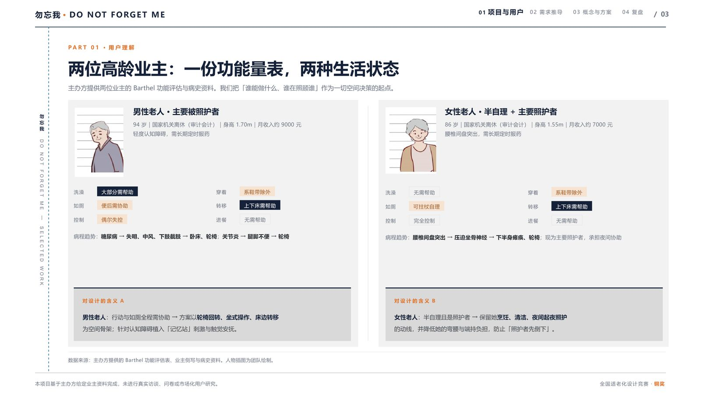
主办方提供两位业主的 Barthel 功能评估与病史资料。我们把「谁能做什么、谁在照顾谁」作为一切空间决策的起点。
男性老人 · 主要被照护者
94 岁｜国家机关离休（审计会计）｜身高 1.70m｜月收入约 9000 元 / 轻度认知障碍，需长期定时服药
病程趋势：糖尿病 → 失明、中风、下肢截肢 → 卧床、轮椅；关节炎 → 腿脚不便 → 轮椅
对设计的含义 A
男性老人：行动与如厕全程需协助 → 方案以轮椅回转、坐式操作、床边转移为空间骨架；针对认知障碍植入「记忆站」刺激与触觉安抚。
女性老人 · 半自理 + 主要照护者
86 岁｜国家机关离休（审计会计）｜身高 1.55m｜月收入约 7000 元 / 腰椎间盘突出，需长期定时服药
病程趋势：腰椎间盘突出 → 压迫坐骨神经 → 下半身瘫痪、轮椅；现为主要照护者，承担夜间协助
对设计的含义 B
女性老人：半自理且是照护者 → 保留她烹饪、清洁、夜间起夜照护的动线，并降低她的弯腰与端持负担，防止「照护者先倒下」。
来源：主办方提供的 Barthel 功能评估表、业主侧写与病史资料。人物插图为团队绘制。
24 小时动线：把功能量表读成一天的生活

极坐标图记录两位老人一日三个时间带的活动与位置；病中变化与新增照护动线在同一张图上叠加读取。
图例
读图结论
病中变化：男卧床时间大增 → 社工上门、子女探望与陪护成为新增动线。
来源：动线时序图与尺度标注。
九处空间问题：每一处都对应一个身体动作
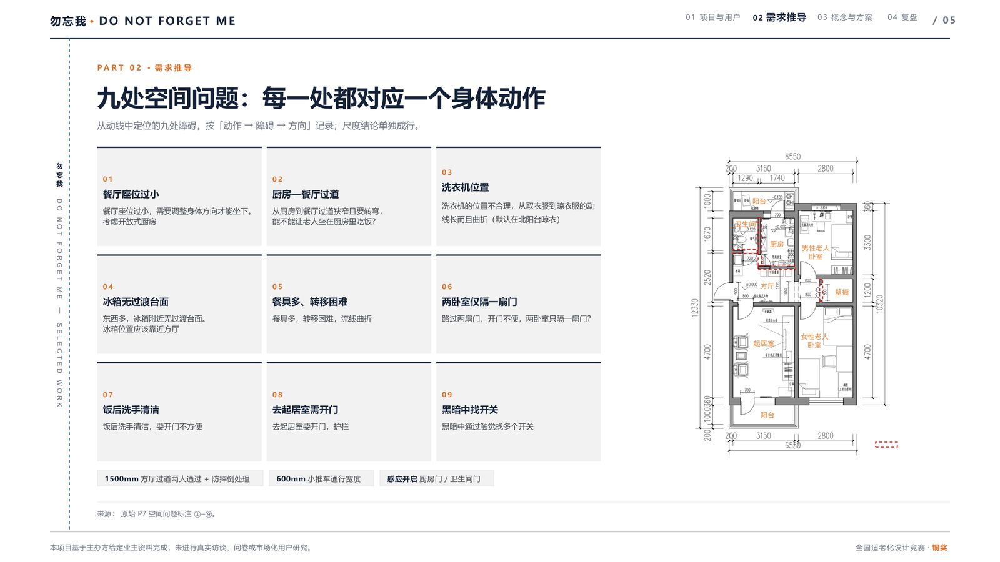
从动线中定位的九处障碍，按「动作 → 障碍 → 方向」记录；尺度结论单独成行。
- 01餐厅座位过小
餐厅座位过小，需要调整身体方向才能坐下。 / 考虑开放式厨房
- 02厨房—餐厅过道
从厨房到餐厅过道狭窄且要转弯， / 能不能让老人坐在厨房里吃饭？
- 03洗衣机位置
洗衣机的位置不合理，从取衣服到晾衣服的动线长而且曲折（默认在北阳台晾衣）
- 04冰箱无过渡台面
东西多，冰箱附近无过渡台面。 / 冰箱位置应该靠近方厅
- 05餐具多、转移困难
餐具多，转移困难，流线曲折
- 06两卧室仅隔一扇门
路过两扇门，开门不便，两卧室只隔一扇门？
- 07饭后洗手清洁
饭后洗手清洁，要开门不方便
- 08去起居室需开门
去起居室要开门，护栏
- 09黑暗中找开关
黑暗中通过触觉找多个开关
尺度结论
- 1500mm 方厅过道两人通过 + 防摔倒处理
- 600mm 小推车通行宽度
- 感应开启 厨房门 / 卫生间门
来源：原始 P7 空间问题标注 ①–⑨。
七空间需求矩阵：谁、在哪个房间、需要什么
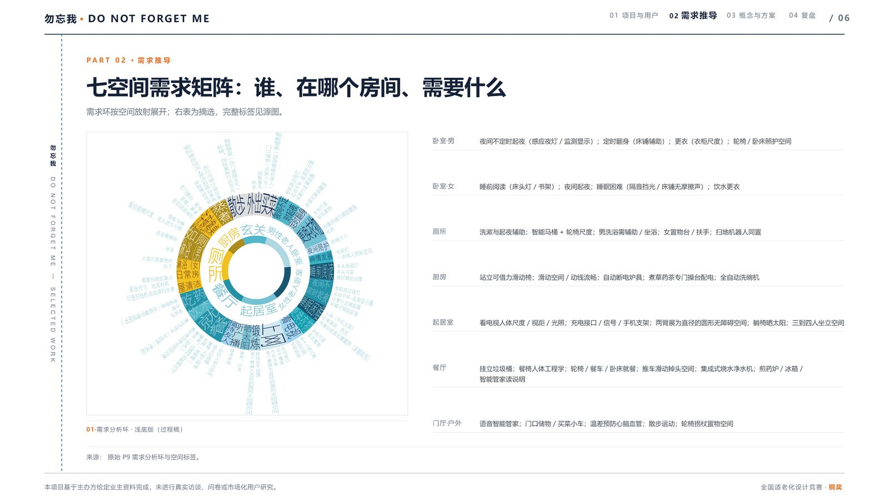
需求环按空间放射展开；下表为逐空间摘选，完整标签见源图。
来源：原始 P9 需求分析环与空间标签。
三条策略：把认知干预翻译成空间语言
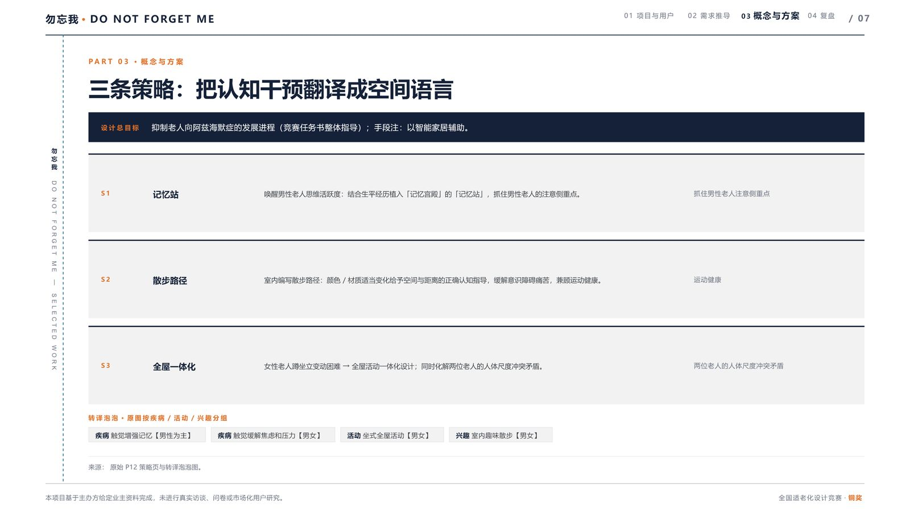
记忆站
唤醒男性老人思维活跃度：结合生平经历植入「记忆宫殿」的「记忆站」，抓住男性老人的注意侧重点。
抓住男性老人注意侧重点散步路径
室内编写散步路径：颜色 / 材质适当变化给予空间与距离的正确认知指导，缓解意识障碍痛苦，兼顾运动健康。
运动健康全屋一体化
女性老人蹲坐立变动困难 → 全屋活动一体化设计；同时化解两位老人的人体尺度冲突矛盾。
两位老人的人体尺度冲突矛盾转译泡泡 · 原图按疾病 / 活动 / 兴趣分组
- 疾病 触觉增强记忆【男性为主】
- 疾病 触觉缓解焦虑和压力【男女】
- 活动 坐式全屋活动【男女】
- 兴趣 室内趣味散步【男女】
来源：原始 P12 策略页与转译泡泡图。
记忆宫殿：一个「反过程」的概念
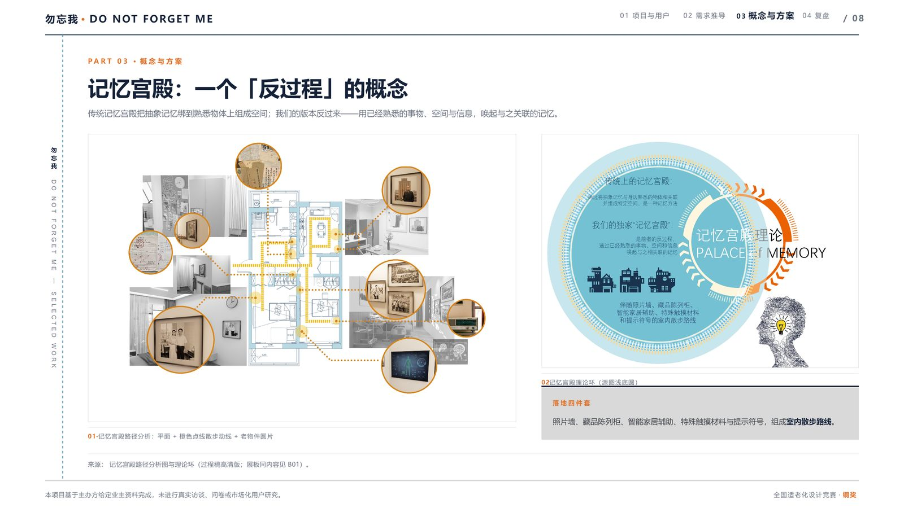
传统记忆宫殿把抽象记忆绑到熟悉物体上组成空间；我们的版本反过来——用已经熟悉的事物、空间与信息，唤起与之关联的记忆。
落地四件套
照片墙、藏品陈列柜、智能家居辅助、特殊触摸材料与提示符号，组成室内散步路线。
来源：记忆宫殿路径分析图与理论环（过程稿高清版；同内容见本册 P13 展板 01）。
平面与尺寸：每个数字都能量出来
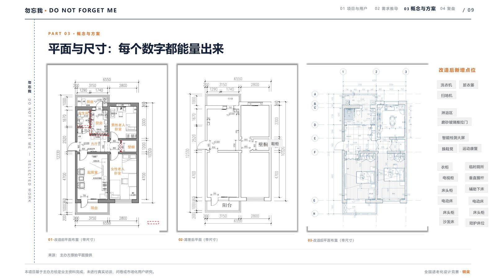
- 01 改造前平面布置（带尺寸）
- 02 清理后平面（带尺寸）
- 03 改造后平面布置（带尺寸）
改造后新增点位
来源：主办方原始平面提供
平面与尺寸：每个数字都能量出来
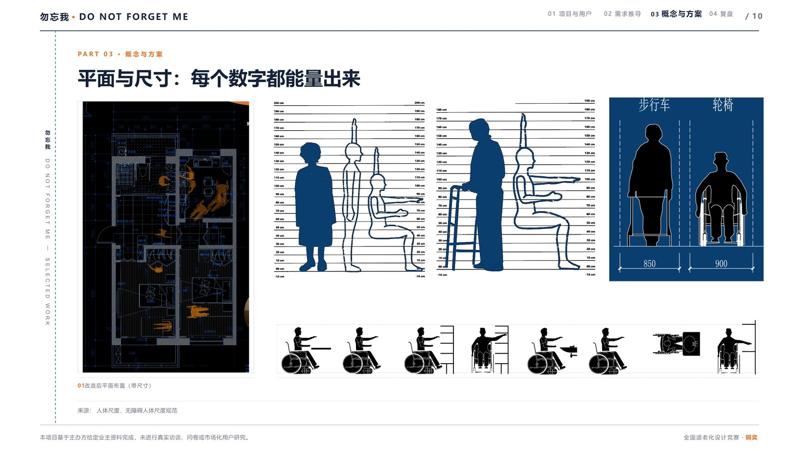
改造后的平面与无障碍人体尺度对照：站姿与坐姿的可达域、助行器与轮椅的占位宽度、轮椅使用者在各功能点位上的操作范围。
图上标注
- 01 改造后平面布置（带尺寸）
来源：人体尺度，无障碍人体尺度规范
辅具选型 A：卧寝与床边转移
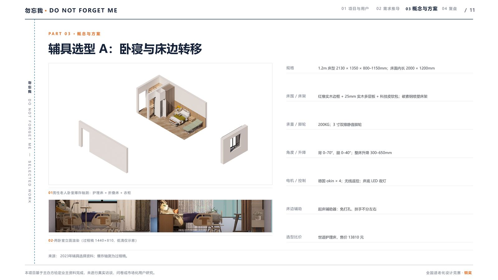
- 01 男性老人卧室爆炸轴测：护理床 + 折叠床 + 衣柜
- 02 两卧室立面渲染（过程稿 1440×810，低清仅示意）
来源：2023年辅具选择资料；爆炸轴测为过程稿。
辅具选型 B：行走、卫浴与家务
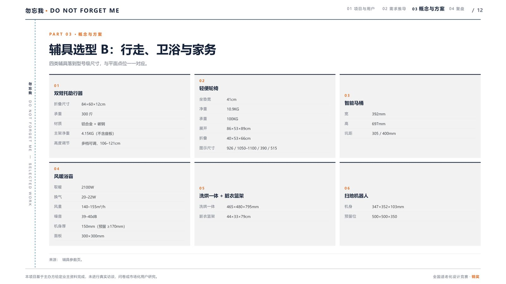
四类辅具落到型号级尺寸，与平面点位一一对应。
01 双臂托助行器
02 轻便轮椅
03 智能马桶
04 风暖浴霸
05 洗烘一体 + 脏衣篮架
06 扫地机器人
来源：辅具参数页。
展板 01：业主与需求

- 01 标题与老照片拼贴、生命时间轴胶片带（1930–2024）
- 02 基本信息与 Barthel 雷达六边形
- 03 需求分析圆环与记忆宫殿理论环
- 04 业主侧写：插图 + 性格爱好 + 病程趋势
与本册的关系
P2–P6 的用户与需求分析即源自此板；此处保留整板以呈现竞赛原貌。
来源：竞赛展板 01（1-1A095 01.jpg，9933 × 14043）。
展板 02：平面与空间

- 01 行为 / 辅具分析
- 02 平面布置图（带尺寸）
- 03 卫生间 / 卧室 / 起居室圆片渲染
- 04 厨房 & 餐厅说明
与本册的关系
P9–P11 的尺寸与辅具选型源自此板。
来源：竞赛展板 02（1-1A095 02.jpg，9933 × 14043）。
展板 03：方案与渲染

- 01 主卧大渲染 + 轴测剖切
- 02 智能家居产品分析
- 03 记忆宫殿路径分析
- 04 智能家具设计思路与渲染组图
与本册的关系
P8、P10 的主图源自此板。
来源：竞赛展板 03（1-1A095 03.jpg，9933 × 14043）。
复盘：做对的、不足的、带走的
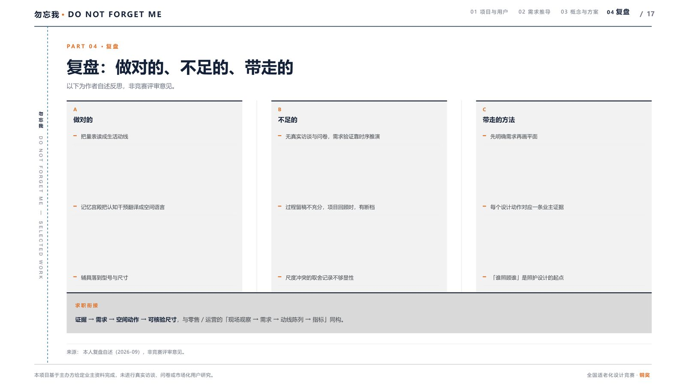
以下为作者自述反思，非竞赛评审意见。
A 做对的
- 把量表读成生活动线
- 记忆宫殿把认知干预翻译成空间语言
- 辅具落到型号与尺寸
B 不足的
- 无真实访谈与问卷，需求验证靠时序推演
- 过程留稿不充分，项目回顾时，有断档
- 尺度冲突的取舍记录不够显性
C 带走的方法
- 先明确需求再画平面
- 每个设计动作对应一条业主证据
- 「谁照顾谁」是照护设计的起点
求职衔接
证据 → 需求 → 空间动作 → 可核验尺寸，与零售 / 运营的「现场观察 → 需求 → 动线陈列 → 指标」同构。
来源：本人复盘自述（2026-09），非竞赛评审意见。